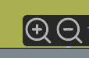
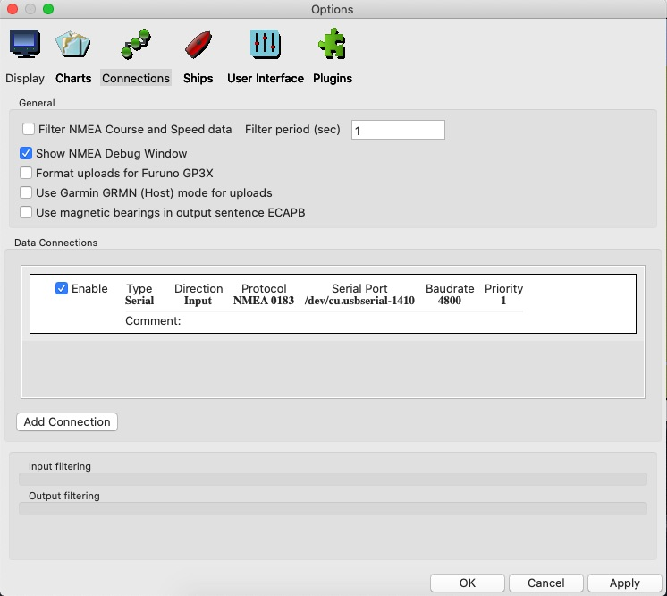

Ajout d’un appareil GNSS
De nombreux appareils GNSS différents peuvent être utilisés pour fournir à OpenCPN la position du bateau. Pour plus de simplicité, le GNSS Globalsat BU-353S4 est utilisé pour démontrer l’installation et l’utilisation d’un GNSS avec OpenCPN

D’autres appareils GNSS disponibles sont listés sur Ici.
Il est possible d’utiliser un récepteur GNSS existant avec un adaptateur série USB.
Le GNSS a besoin de "voir" les satellites. Vous devrez peut-être déplacer le GNSS jusqu’à ce qu’il ait une vue dégagée du ciel. Sur un bateau, on peut constater que des signaux suffisants sont reçus sous un pont en fibre de verre.
Pilotes des périphériques
Les pilotes de périphériques pour divers systèmes d’exploitation peuvent être téléchargés Ici
Windows
Téléchargez l’installateur pour la version de Windows que vous exécutez.
Installez le pilote en utilisant l’installateur .exe.
Branchez le GNSS. Windows devrait reconnaître le périphérique et utiliser le pilote approprié pour celui-ci.
Appliquer Connections
Ajouter une connexion
Using the DataPort dropdown select the Prolific USB port.
Faites défiler vers le haut et cochez Ouvrir la fenêtre d’affichage des données NMEA. Ce n’est pas strictement nécessaire, mais donne une bonne indication du bon fonctionnement du GNSS.
Appliquer OK
Vous devrez peut-être déplacer la zone de carte, pour que la position du bateau apparaisse.

La fenêtre de débogage NMEA peut être fermée avec le bouton Fermer : 3.6.jpg[].
La Fenêtre d’état de la boussole/GPS montre une image de barre verte:3.7.jpg[] qui indique la force du signal GNSS.
La barre d’état indique la position du bateau.
Zoomer dans l’ l’icône du bateau passe à l’image du contour du bateau:3.9.jpg[]. La molette de la souris peut également être utilisé pour zoomer/dézoomer.
MacOS
Branchez le GNSS.
Options Connexions
Ajouter une connexion
Utiliser "Série"

Avec le menu déroulant port com, sélectionnez l’option /dev/cu.usbserial-1410.

Cochez la case *Afficher la fenêtre de débogage NMEA pour afficher les phrases NMEA reçues du GNSS.
La fenêtre de débogage NMEA peut être fermée avec le bouton Fermer : 3.6.jpg[].
La Fenêtre d’état de la boussole/GPS montre une image de barre verte:3.7.jpg[] qui indique la force du signal GNSS.
La barre d’état indique la position du navire.
Zoomer dans l’ l’icône du navire passe à l’image du contour du bateau:3.9.jpg[]. La molette de la souris peut également être utilisé pour zoomer/dézoomer.
Linux
Options Connexions
Ajouter une connexion
En utilisant la connexion série, le menu déroulant port com possède une entrée /dev/ttyUSB0-Prolific ….

Appliquer puis cochez Activer pour cette connexion.
Ceci présente un message sur les permissions.

Règle d’installation

OK
Suivez les conseils pour redémarrer OpenCPN.
Une règle (lien symbolique) a été créée pour utiliser les conseils GNSS.

Si vous devez supprimer le GNSS et nettoyer l’installation, le lien symbolique peut être supprimé à l’aide de Terminal.

Après le redémarrage d’OpenCPN et l’édition de la connexion DataPort pour utiliser le lien symbolique opencpn0 la position du bateau apparaît sur la carte.
Zoom dans l’ et l’image de l’icône bateau:3.9.jpg[] apparaît.